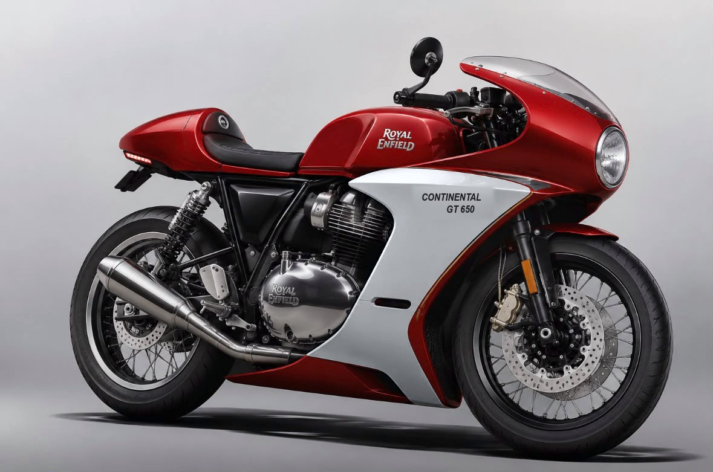

Your render repainted in 12 liveries, 48 reference photos of bikes that already wear this look, and the parts bill with prices from current listings. Mirrors and exhaust stay stock.
Each version is your render with the panels repainted, keeping its reflections and shading, so you see the colours on the real shape. The tank stays Rocker Red in all but one, because painting only the new fibreglass is what keeps the cost down.

The mockups keep the render's fairing shape. The MK Designs kit has smaller, more open lower panels, so a real build will show more engine. For the half-fairing layout, see the GT 750 show bike and Ducati Paul Smart photos below.
Tap a photo to enlarge it. Every photo is freely licensed from Wikimedia Commons, credited underneath. The kit makers' own product photos are copyrighted, so those are linked in the parts bill instead of copied here.
Prices are from listings I could find; rows marked "my estimate" had no Indian listing. The fairing kit is listed as sold out, so confirm price and restock with the maker.
| Part | Price | Where the number comes from |
|---|---|---|
| Full fairing kit: headlight fairing, side panels, belly pan, headlight, 25 mm lower clip-on mounts | ₹39,990 | MK Designs FF650 CafeR, current listing (sold out). Was ₹29,990 at its 2022 launch. |
| Single seat | ₹3,500 | Royal Enfield genuine accessory, 2021 price list |
| Seat cowl, factory-painted Rocker Red (part 1990499) | ₹2,480–2,650 | Royal Enfield genuine; dealer listing. Price range is from the other colours' listings. |
| Tail tidy | ₹899–2,700 | Carorbis listings for the 650 twins |
| LED tail light strip | ₹1,000–3,000 my estimate | No Indian listing found |
| Paint the fairing panels to match Rocker Red, plus one second colour | ₹8,000–15,000 my estimate | No published price. Get a Pune quote; ask for the factory colour code match. |
| Fitting | ₹2,000–5,000 my estimate | The kit is described as bolt-on, under three hours with basic tools |
| Total | ₹58,000–72,000 |
Going for a full respray instead: one custom shop's guide puts standard paint at ₹20,000 and up and candy finishes at ₹65,000 and up (Devils Customs, a shop's own figure). That takes the build to about ₹1.15–1.2 lakh. Number boards, racing stripes and lettering are cheapest as vinyl, a few hundred rupees each at a sticker shop. A front half fairing alone was listed at ₹8,490 (MK Designs semi-fairing, older price).